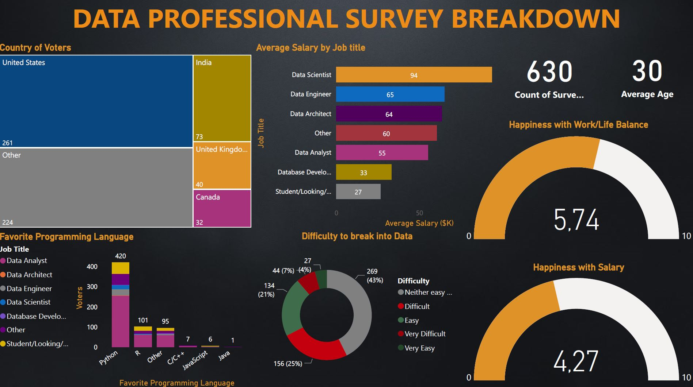

In this dashboard I analyzed real data from a research conducted on workers in the world of data
In this page I will publish some of the Power BI projects I made
In this dashboard I analyzed real data from a research conducted on workers in the world of data